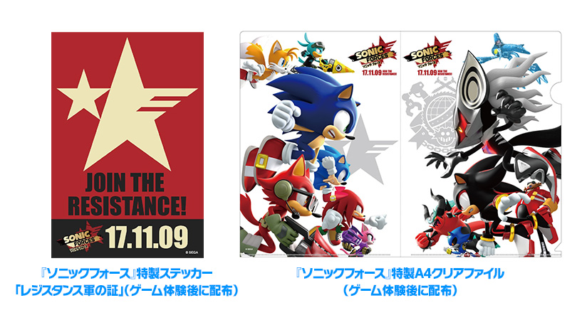
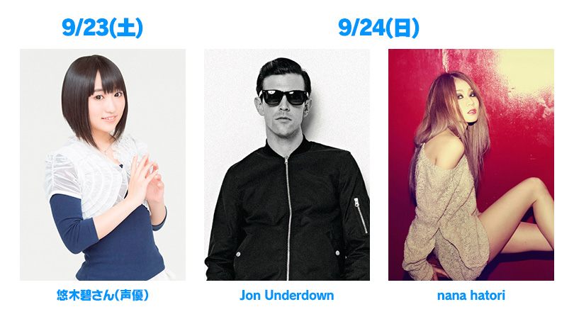

東京ゲームショウ2017 『ソニックフォース』ゲーム体験コーナー＆ステージイベントのお知らせ
2017年9月21日（木）～24日（日）の期間、千葉県・幕張メッセで開催される東京ゲームショウ2017のセガゲームスブースに、ソニックシリーズ最新作『ソニックフォース』のゲームがいち早く体験できるコーナーが出展します。ゲームをご体験いただいた方には、『ソニックフォース』特製ステッカー「レジスタンス軍の証」と、『ソニックフォース』特製A4クリアファイルをセットでプレゼントします。
また、9月23日（土）、9月24日（日）の2回、セガゲームスブースのメインステージで『ソニックフォース』のステージイベントを実施します。同ステージの模様は、ニコニコ生放送、FRESH！、YouTube Live、Periscope（Twitter）でもご覧いただけます。
ステージイベントゲスト
| イベント名称 | 東京ゲームショウ2017／TOKYO GAME SHOW 2017 |
|---|---|
| URL | TGSセガゲームス公式サイト |
| 開催日時 | ビジネスデイ：2017年9月21日（木）、22日（金）10:00～17:00 一般公開：2017年9月23日（土）、24日（日）10:00～17:00
|
| 開催場所 | 幕張メッセ（千葉県千葉市美浜区中瀬2-1） |
| ブース場所 | セガゲームスブース：小間番号6-N01（幕張メッセHall6駅側） セガゲームス物販コーナー：小間番号9-E15（幕張メッセHall9東側） |
| 出展概要 | ビジネスデイ／一般公開日ともに、セガゲームスブース内でゲーム体験を実施します。ご体験した方にはノベルティグッズをプレゼントいたします。 また、セガゲームスブースのメインステージでは、豪華ゲストが登場するステージイベントを実施します。ステージイベントの模様は、インターネット上の生放送番組でもご覧いただけます。 |
| ステージイベント | ■開催日時：9月23日（土）12:45～13:15 内容： 『ソニックフォース』アバター役の悠木碧さんをゲストに迎え、飯塚シリーズプロデューサーと中村プロデューサーが、『ソニックフォース』のゲームの魅力を徹底解説します。 出演者： ソニックフォース出演声優/悠木 碧（ユウキ アオイ） ソニックシリーズプロデューサー/飯塚 隆（イイヅカ タカシ） ソニックフォース プロデューサー/中村 俊（ナカムラ シュン） ■開催日時：9月24日（日）15:45～16:15 内容： 飯塚シリーズプロデューサーと中村プロデューサーが、大谷サウンドディレクターを交えて、サウンドの魅力を中心に『ソニックフォース』を徹底解説します。ステージの最後には大谷サウンドディレクターによる、ゲストヴォーカルを交えたミニライブを実施します。 出演者： ヴォーカル/Jon Underdown（ジョン・アンダーダウン） ヴォーカル/nana hatori（ナナ・ハトリ） ソニックシリーズプロデューサー/飯塚 隆（イイヅカ タカシ） ソニックフォース プロデューサー/中村 俊（ナカムラ シュン） ソニックフォース サウンドディレクター/大谷 智哉（オオタニ トモヤ） |
- ※入場にはチケット（有料）が必要です。
- ※一般公開は9/23（土）・9/24（日）の2日間です。一般のご来場の方はビジネスデイにはご入場いただけませんのでご注意ください。
- ※配布物の数量には限りがあります。なくなり次第終了となりますので予めご了承ください。また、デザインは予告なく変更になる場合があります。
- ※ゲーム体験コーナー、ステージイベントについて、混雑時には入場制限をもうけさせていただく場合があります。会場ではブーススタッフが誘導いたします。
- ※ステージイベント参加整理券を配布する予定はありません。
- ※ステージイベントは撮影禁止です。
→TGS 2017公式サイト
→TGSセガゲームス公式サイト
→TGSセガゲームス物販コーナーのお知らせ
→TGSセガゲームス物販「ソニックフォース」
→TGSセガゲームス物販「ソニックマニア」
→TGSセガゲームス物販「和ソニック」
- ※注：物販コーナーに誤表記があり訂正しました。（9/8（金）現在）